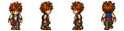
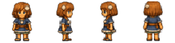
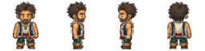
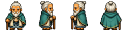
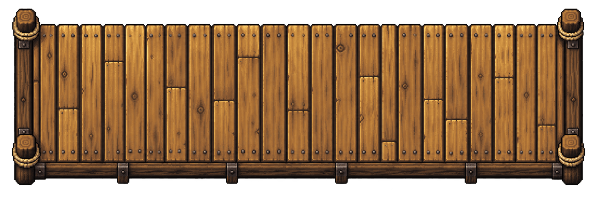

01

あなたが動かす主人公
チャトア
ウペトア島の少年。父の網仕事を手伝いながらも、心は海の向こうへ。ペトア島を見に行きたい気持ちが、冒険の第一歩になる。
気になる場所へ、一歩ずつ。小さな島から、冒険へ。
いつもの港。見慣れた海。
その向こうに見える島へ、今日は行ってみたい。
歩いて、話して、見つける物語。
ブラウザRPG「PETOA 光を運ぶ子」へようこそ。
無料・ブラウザで遊べます

01 / はじまりの港
海辺のウペトア島で暮らすチャトア。村には、父の網仕事も、漁師たちの話も、友だちとの約束もある。
海の向こうに見えるのは、ペトア島。きれいな浜辺と深い森。そして、村の大人たちが守り続けてきた「森の奥へ入ってはいけない」という約束。
それでも、向こうへ行ってみたい。小舟の櫂を握ったチャトアの目に、島はどんな姿を見せるのだろう。
ここで紹介するのは、冒険の入口。続きは、あなたの足で。
02 / 島で出会う人々
近づいて話しかけると、いつもの景色に物語が増えていく。

あなたが動かす主人公
ウペトア島の少年。父の網仕事を手伝いながらも、心は海の向こうへ。ペトア島を見に行きたい気持ちが、冒険の第一歩になる。
気になる場所へ、一歩ずつ。
海辺の友だち
チャトアを貝殻拾いに誘う、村の少女。ペトア島のことも、家の手伝いの大切さも知っている。ひとりで島へ行こうとするチャトアを心配する。
手伝いが終わったら、海辺へ。
海と暮らす家族
網仕事を通して、島の暮らしを教えてくれる父。長く海と付き合ってきたその言葉には、子どもがまだ知らない海の顔がある。
海は道でもあり、境でもある。
島の約束を知る人
村の暮らしと、ペトア島にまつわる古い約束を見守る村長。遠くへ出ないようにとチャトアに声をかける。その約束には、どんな理由があるのだろう。
話を聞けば、島が少し見えてくる。村には、漁師や子どもたちも。用事がなくても、ちょっと話しかけてみよう。
03 / 冒険の舞台
小さな発見を拾いながら、島の景色をめぐろう。

出発の場所
家々と港が並ぶ漁村。魚の籠や父の網、村長の記録帳。いつもの道にも、気になるものがある。
波打ち際の発見
波が引いた砂浜に、貝殻がひとつ。形を眺めたり、もうひとつ探したり。足元にも冒険が待っている。
約束の向こう側
木々と茂みのあいだを、生き物たちが行き交う。何が動いているのか、少し立ち止まって見てみよう。
04 / 遊び方
パソコンは矢印キー、または WASD で移動。スマートフォンは画面の方向ボタンで歩けます。
人や物の近くで Enter / Space、または「調べる」を押そう。会話は「つづける」で読み進めます。
ミッションとヒントが次の一歩を教えてくれます。中断するときは「セーブ」、再開はタイトルの「つづきから」。
それでは、ウペトア島で会いましょう。
チャトアと冒険に出る